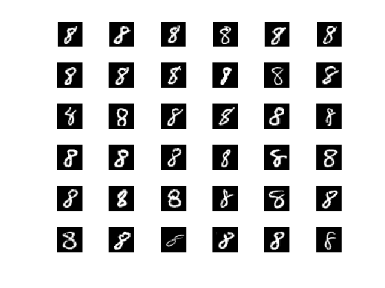
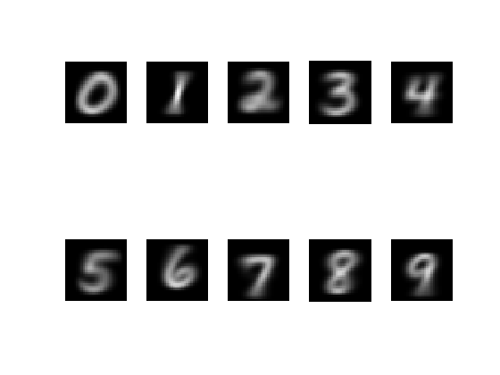
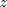
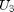
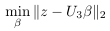
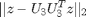
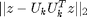
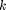
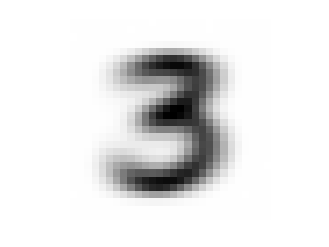
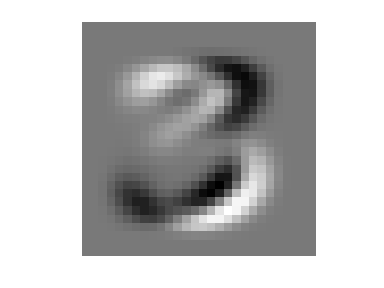

Class final project: Classification of Handwritten Digits
Introduction
In this project assignment, we will attempt to solve a pattern recognition problem. Your main task in this project is to implement two methods for classifying a set of handwritten digits (the testing set). For each image in the testing set, each method should give a label corresponding the class of digit that most closely resembles the image’s shape. To build the algorithms, you are given a dataset for training purposes. The training data set contains a large number of examples of different ways each digit can be written.
Contents
Getting started
- Read the pdf file called "matrix methods in data mining and pattern recognition Chap10.pdf" on Canvas.
- Download the dataset 'mnistdata.mat' and the scripts 'mnistdata_upload.m' and 'viewdigit.m' from the class webpage
- The dataset is separated into two categories, training and testing. Each category contains 10 sets of digits (0 to 9).
To see this, enter the following line into MATLAB
whos('-file','mnistdata.mat')
Name Size Bytes Class Attributes test0 980x784 768320 uint8 test1 1135x784 889840 uint8 test2 1032x784 809088 uint8 test3 1010x784 791840 uint8 test4 982x784 769888 uint8 test5 892x784 699328 uint8 test6 958x784 751072 uint8 test7 1028x784 805952 uint8 test8 974x784 763616 uint8 test9 1009x784 791056 uint8 train0 5923x784 4643632 uint8 train1 6742x784 5285728 uint8 train2 5958x784 4671072 uint8 train3 6131x784 4806704 uint8 train4 5842x784 4580128 uint8 train5 5421x784 4250064 uint8 train6 5918x784 4639712 uint8 train7 6265x784 4911760 uint8 train8 5851x784 4587184 uint8 train9 5949x784 4664016 uint8
Each row within each set has length 28*28=784 and represents a 28-by-28 pixel image. For example, the array train5 contains 892 instances of digit 5, and array test8 contains 974 instances of digit 8. - Start with the 'mnistdata_upload.m' script displayed below.
-
In this project, we implement two ways to classify a digit:
-
The Centroid Method provides a very simple approach to classifying digits. In the training phase, we build up a defining characteristic of each class of digit (0 to 9) by computing its centroid. The centroid of a class of digit is the average of all the different variations of that digit in the train set. For example, centroid of digit class 3 is found by taking the mean of all the 6131 rows of train3. In the classification/test phase, we compute the 2-norm (Euclidean) distances between an unknown digit and the centroids of all ten classes of digits, and classify the unknown digit into the class of digit for which its distance to that class' centroid is smallest.
-
The PCA Method is a way to classify digits that relies on using the SVD to compute defining characteristics. In the training phase, we will compute the SVD for each of the training data set. This will give us a set of singular vectors for each class of digit, which hopefully characterizes that class well. In the testing phase, we classify an unknown digit by computing its residual norm with respect to each class of digit and choosing the class which gives smallest residual. This residual (defined later on) gives a approximation of how well a unknown digit can be characterized by a certain class of digit.
-
% The MNIST databse of handwritten digits -- % Yann LeCun -- NYU % Corinna Cortes -- Google % Chris J. C. Burges -- Microsoft Research clear; load mnistdata; % Visualize a selected train/test digit figure(1) n = 6; for i = 1:n*n digit = train8(i,:); %digit = test8(i,:); digitImage = reshape(digit,28,28); subplot(n,n,i); image(rot90(flipud(digitImage),-1)); colormap(gray(256)); axis square tight off; end % Visualize the average train digits T(1,:) = mean(train0); T(2,:) = mean(train1); T(3,:) = mean(train2); T(4,:) = mean(train3); T(5,:) = mean(train4); T(6,:) = mean(train5); T(7,:) = mean(train6); T(8,:) = mean(train7); T(9,:) = mean(train8); T(10,:) = mean(train9); for i = 1:10 digitImage_mean(:,:,i) = reshape(T(i,:),28,28); end figure(2) for i = 1:10 subplot(2,5,i) image(rot90(flipud(digitImage_mean(:,:,i)),-1)); colormap(gray(256)); axis square tight off; end
The code above produces the two figures below. The first figure shows a sample of 36 different instances of digit 8 in the set train8. The second figure shows the 10 averages of the digits in train0, train1, ..., and train9 .
 The Centroid method
- The following code takes a digit from the testing data and computes the 2-norm distances between this digit and the 10 average train digits computed above.
z = double(test7(55,:)); dist = zeros(10,1); for k=1:10 dist(k) = norm( z - T(k,:) ); end dist
dist = 1.0e+03 * 2.4099 2.0790 2.0986 1.9529 1.9810 1.9689 2.1937 1.5645 1.9331 1.6696Since the 2-norm distance between unknown digit and the average train digit 7 is smallest, the centroid method will label unknown digit as '7' which is indeed the correct answer.
Note also that average train digit 7 is T(8,:) because MATLAB indexing starts at 1.
- Your first task is to write a function called centroid that takes as inputs:
and outputs:
- an integer identifying the test digit (e.g. 3 for digit 3 )
- a n-by-784 test array/images (e.g. test3 for digit 3)
- a 10-by-784 array T, where i-th row contains the average of (i-1)-th training digit
- an n-by-1 vector containing the results of classification (0-9) for the test images.
- a number for the success rate (which is equal to the number of correctly labeled digits divided by the total size n)
- Your next task is to use the function centroid to compute the success rates of all test digits (test0, test1,test2,...,test9).
The PCA Method
The PCA method first identifies characteristic properties of the training images, and uses these properties to make the classification of test images. Here, the characteristic properties are the principal components extracted from the training images.
- The following line of code finds the first 5 singular vectors of the digit 3 training set.
-
The PCA method tests how well a digit  can be represented in this basis  of digit 3's by solving the least square problem:
 which has the solution:
 , where the vector inside the norm is called the residual vector.This gives us a way to measure similarity between and all the train digit 3's. The training phase then, consists of computing the SVD of each set of train digits and saving it in a 3 dimensional array:
basis_len = 5; Us=zeros( 28*28, basis_len, 10); for k=1:10 % go through each digit 0 to 9 s = strcat('train',num2str(k-1)); A = double(eval(s)); % and get first 5 singular vector of A transposed [U,~,~] = svds( A', basis_len ); Us(:,:,k)=U; end
Note that we have chosen to save only the first 5 singular vectors of each set of train digits. -
To classify an unknown digit we compute the residual norm
 for each  from 0 to 9 and choose 's label as the that results in the smallest residual norm.
Let's try that on a test digit:
z = double(test4(14,:))'; dist = zeros(10,1); for k=1:10 Uk = Us(:,:,k); dist(k) = norm( z - Uk*(Uk'*z) ); end dist
dist = 1.0e+03 * 2.1859 2.1720 2.1305 2.1573 1.4873 2.1208 2.0254 1.9824 1.9618 1.7316Since the residual norm is smallest in the basis of 4's, test4(14,:) is classified as '4' (which is the correct answer!). -
Your task now is to write a function called pca_digits that takes as inputs:
and ouputs:
- an integer identifying the test digit (e.g. 3 for digit 3 )
- a n-by-784 test array/images (e.g. test3 for digit 3)
- a 784-by-5-by-10 array U, where U(:,:,i) contains the first 5 singular vectors of the (i-1)-th training digit
- an n-by-1 vector containing the results of the classification (0-9) for the test images.
- a number for the success rate (which is equal to the number of correctly labeled digits divided by total size n)
- Use the function pca_digits created above to compute the success rates of all test digits. How does it compare to the centroid method?
- Finally, experiment with different values for basis_len. How does the success rate change as you use more singular vectors?
[U3,~,~] = svds(double(train3'), 5) ; size(U3)
ans = 784 5
Note that we needed to take the SVD of the transpose of array train3 because each image is stored as a row in the array.
These five singular vectors represent the five dominant chracteristics of the digit '3'. They also form an approximate basis for the space of all possible digit 3's. To view the first two singular vector, use function viewdigit.m
viewdigit( U3(:,1) ); viewdigit( U3(:,2) ) ;
This results in the following figures
 